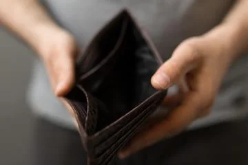
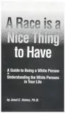
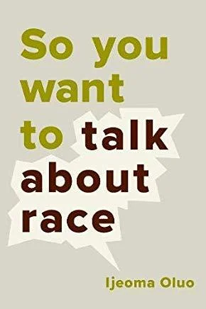
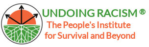
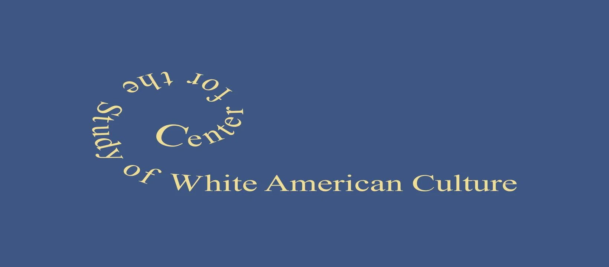

2019-05-09
April Showers Bring May Resources
Greetings, Friends!
I hope you are all doing well on your journeys. Here are some more resources to guide you on your way. May you continue to challenge yourselves to become better antiracist co-conspirators and human beings.
If you are interested, I am starting new online anti-racist /anti-oppressive focused clinical supervision groups this Spring. if you would like to discuss these, please schedule a call here.
See you on the path!
Robin
I remember very clearly the night I got into a discussion about white privilege with a good friend of mine. She is a white woman who has lived through a lot of trauma including chronic pain, illness and poverty. I was newly “awake” and wanted to share everything I was learning. She, however, was NOT onboard with identifying herself in any way as privileged or racist and I felt ill equipped to find the “right” words to further the conversation. I became aware of the sinking feeling in the pit of my stomach as I thought, “Oh shit, here it comes,” and “I knew it would happen eventually,” and “I’m going to lose a friend!” Since that day I have indeed lost a few friends and distanced some family members, and it never gets easier.
Several weeks after our conversation, I read this article (linked below) and sent it to my friend. I asked her if she would be willing to read it and have a conversation about it with me. She did, and although it didn’t bring us eye to eye, it did create a space for us to continue having conversations about racism and maintain our friendship. I can’t promise that it will do the same for you, but it did give me some language at a time when I was just starting to step out of my own comfort zone.
Explaining White Privilege to a broke white person, Gina Crosley-Corcoran

As a consultant and organizer who speaks extensively on whiteness and white supremacy culture, this short but powerful book not only informs my work but has deeply impacted my ongoing journey toward developing a healthy white racial identity. In this book, Dr. Helms explains the stages of white racial identity development and offers exercises throughout that gave me the opportunity to have a more meaningful and personal experience.
A Race Is A Nice Thing To Have; A Guide To Being a White Person or Understanding The White Person in Your Life. By Dr. Janet E. Helms

Next Up…
YouTube videos by IJEOMA OLOU
In this month’s blog, I am including three YouTube conversations featuring writer, speaker and activist Ijeoma Oluo. In all honesty, I couldn’t choose just one. But first: her book, So You Want To Talk About Race, is a MUST READ for all White People who are serious about stepping up and taking on the task of dismantling racism. I’m sure there are more eloquent ways to say this but, she is just so real! Her words have touched me in the deepest parts of my soul.

Ijieoma Oluo brilliantly bridges the gap that can make it so difficult for White People and People of Color to talk about race and tells some painful truths that I needed to hear. I felt gut wrenched, hearing the heartbreaking story she shared ( in her book) about the time she had to explain to her black son why his white father let his white stepbrother play outside with toy guns but told him that he could never do that.
Ijeoma‘s powerful and unapologetic words remind me that I can’t afford to be afraid to screw it up. As she says, “you are going to screw it up royally and more than once.” I have learned that part of my work as a co-conspirator, is to keep showing up and learning from my screw ups.
Here are three videos that stand out to me:
Embedded media (requires internet): //www.youtube.com/embed/TnybJZRWipg?wmode=opaque&enablejsapi=1
Embedded media (requires internet): //www.youtube.com/embed/oqBqwI70bVk?wmode=opaque&enablejsapi=1
Embedded media (requires internet): //www.youtube.com/embed/XvxomaFJvvw?wmode=opaque&enablejsapi=1
Here are some further online resources:
This website not only lists all the regional Undoing Racism Workshops but it is chock full of resources. Take some time to click through.

The People’s Institute of Survival and Beyond: Undoing Racism and Community Organizing Workshop. (see the antiracist alliance website for workshops in the NYC area)

Check out The Center for the Study of White American Culture “Our mission is to build an equitable society in the United States by decentering white culture and centering an anti-racist multiracial culture free of white supremacy. When you understand white American culture, you are better able to:
Understand race in the United States
Work effectively to create just and equitable organizations”
The Center for the Study of White American Culture has an upcoming workshop for those in NYC. Click the link to register: Raising Anti-racist White Children: Brooklyn NY
Until next month
In Solidarity,
Robin